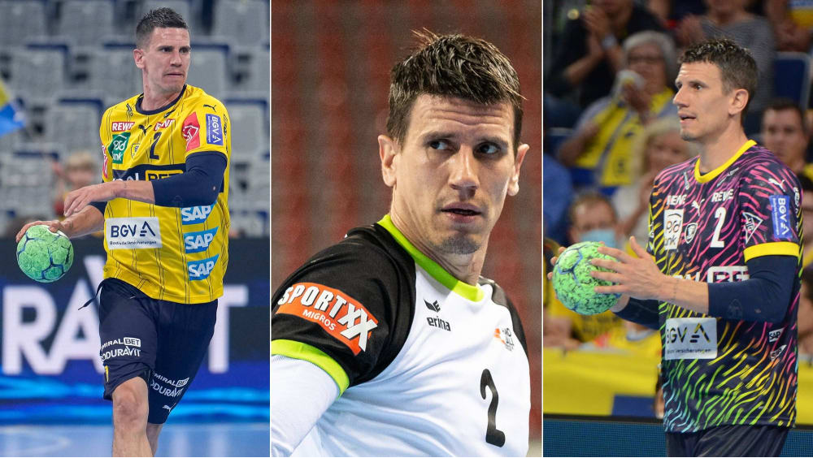

News aus der HBL

Andy Schmied verlässt die Löwen
Im letzten Heimspiel der Rhein-Neckar Löwen wurde es emotional in der SAP Arena. Für die Löwen war es das letzte Hurra vor heimischem Publikum ihres überragenden Regisseurs Andy Schmied, der den Verein nach 12 Jahren verlässt. Nach einer toll umkämpften partie verabschiedete sich der Schweitzer vor den versammelten Fans. Für den THW Kiel gab es dagegen Grund zur Freude. Mit dem Sieg in Mannheim sicherten sich die Kieler den zweiten Tabellenplatz und somita cu einen platz für die EHF Champions League in der nächsten Saison.